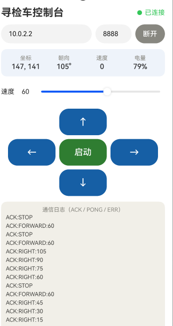
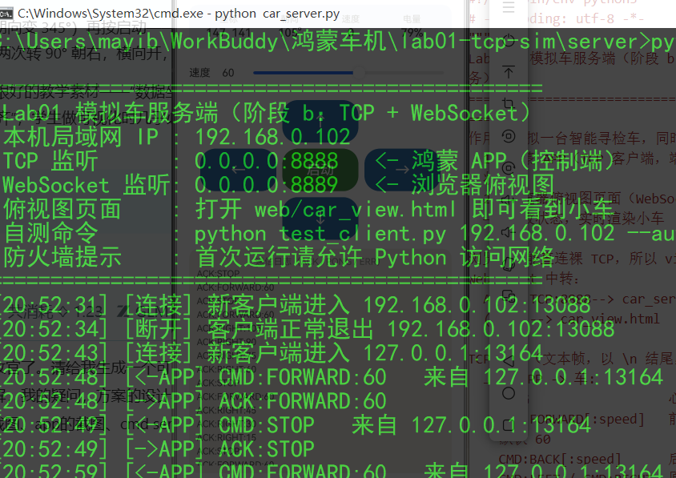
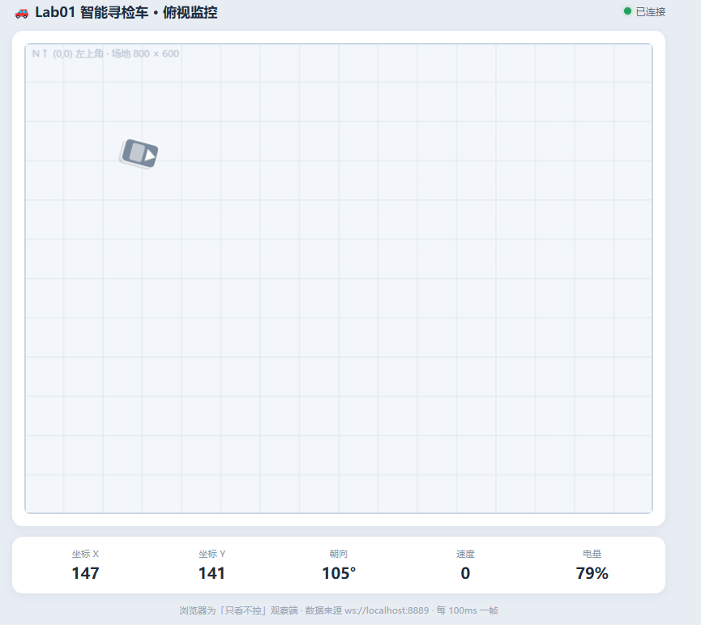

阶段 a：TCP 指令链路（APP ↔ 模拟车服务端） | 阶段 b：WebSocket 浏览器俯视图可视化 | 已全部实测通过 ✅
本课是「鸿蒙开发与应用」微专业的第一个项目课，处于「基础 → 应用开发基础 → 进阶 → 通用实战」之后的方向性项目实战位置。整门课按四个阶段递进，最终交付「手机摇杆控车 + 云端可管」的完整可演示系统：
| 阶段 | 内容 | 对应本次工作 |
|---|---|---|
| 阶段 1操控页面 UI | UI 组件、样式定制、触摸事件 | ✅ 已完成（CarCtrl 操控页面） |
| 阶段 2摇杆设计与开发 | 自定义组件剖析、交互逻辑、集成 | ⏳ 待做（协议已预留 CMD:MOVE:vx,vy） |
| 阶段 3TCP 网络通信 | TCP 原理、Socket 编程、通信测试 | ✅ 本次收官（a + b） |
| 阶段 4华为云 IoT 集成 | IoTDA 平台操作、协议解析、远程管理 | ⏳ 下一步 |
car_server.py）完全等效，且所有收发日志可见，排错效率比黑盒真车更高。教学路线定为：PC 模拟车 → 云上模拟设备 → 真车 1～2 台期末轮换演示。| 统一称呼 | 具体指什么 | TCP 角色 | 跑在哪里 |
|---|---|---|---|
| APP 端（控制端） | 鸿蒙 APP，DevEco 模拟器里跑 | TCP 客户端（主动连接） | 学生笔记本模拟器 |
| 小车端（模拟车服务端） | car_server.py 模拟的寻检车 | TCP 服务端（监听 8888） | PC 上 |
| 测试客户端 | test_client.py，开发期验收工具 | TCP 客户端 | PC 上 |
10.0.2.15，访问宿主机用网关别名 10.0.2.2（包经 NAT 翻译落到 PC 的 127.0.0.1:8888）。服务端横幅打印的 192.168.0.102 是局域网真实 IP，给其他真机设备用的。一句话：模拟器连自己电脑 → 10.0.2.2；其他设备连这台电脑 → 192.168.x.x。服务端监听 0.0.0.0 = 所有门牌号的 8888 都接客，两条路都通。CMD:FORWARD 回 ACK:FORWARD，表示"这条指令我收到并执行了"。注意区分：TCP 传输层自带确认保证字节不丢，应用层 ACK 表达的是业务层面"指令被理解执行"，两回事。
┌──────────────────────────┐
│ 鸿蒙 APP（DevEco 模拟器） │ TCP 客户端：发指令 + 收 ACK/STATE
└────────────┬─────────────┘
│ TCP :8888（文本帧，\n 结尾，UTF-8）
┌────────────▼─────────────────────────────┐
│ car_server.py（小车端，一台 PC 上跑） │
│ ├─ TCP Server :8888 ← 对 APP（控制权） │
│ ├─ WebSocket :8889 ← 对浏览器（只看） │
│ ├─ 运动模型：100ms/tick 更新 (x,y,朝向) │
│ └─ 日志：所有收发逐条打印（排错靠它） │
└────────────┬─────────────────────────────┘
│ WebSocket :8889（JSON 状态，100ms/帧）
┌────────────▼─────────────┐
│ car_view.html（浏览器） │ Canvas 俯视图：小车 + 轨迹 + HUD
└──────────────────────────┘
| 方向 | 帧 | 说明 |
|---|---|---|
| APP→车 | PING | 心跳，回 PONG（断线检测） |
| APP→车 | CMD:FORWARD[:80] / CMD:BACK[:40] | 前进/后退，速度 0~100，省略默认 60 |
| APP→车 | CMD:LEFT / CMD:RIGHT | 原地转向，每次 ±15°（已拍板：第一版原地转） |
| APP→车 | CMD:STOP / CMD:STATUS | 停止 / 立即回一帧状态 |
| 车→APP | ACK:FORWARD:80 等 | 指令回执（已收到并执行） |
| 车→APP | STATE:x=400,y=300,heading=0,speed=60,battery=87 | 每 100ms 广播 |
| 车→APP | ERR:UNKNOWN_CMD:FOO / ERR:BAD_FRAME:xxx | 非法指令容错 |
WebSocket 帧（小车端→浏览器，JSON，100ms/帧）：{"x":400.0,"y":300.0,"heading":0,"speed":80,"battery":86.9}
CMD:MOVE:vx,vy（-100~100），按钮和摇杆共用一套解析；② 这套"指令帧/状态帧"到 IoT 阶段直接映射为物模型的命令和属性——学生能体会"换协议不换思路"。
WorkBuddy\鸿蒙车机\lab01-tcp-sim\ ├── server\ │ ├── car_server.py # 小车端：TCP 8888 + WebSocket 8889 双服务（asyncio） │ └── test_client.py # 测试客户端：--auto 自动自测 / 交互两模式 ├── web\ │ └── car_view.html # 浏览器俯视图：零外部依赖，双击即开 ├── docs\ │ └── 本文档 └── README.md # 使用步骤 + 协议速查 + 排错表 D:\DevEco\HarmonyOSProjects\CarCtrl\（APP 端工程） ├── entry/src/main/module.json5 # 已加 ohos.permission.INTERNET └── entry/src/main/ets/ ├── common/CarClient.ets # TCP 客户端封装：连接/发帧/\n 分帧收/STATE 解析 └── pages/Index.ets # 操控页面 UI
依赖情况：小车端 TCP 部分纯标准库；WebSocket 用 websockets 库（pip install websockets，缺库自动降级纯 TCP 并提示）；页面零依赖；APP 端用 @ohos.net.socket TCPSocket。
| 验收项 | 预期 | 实测 |
|---|---|---|
| TCP 指令链路 | APP 发指令 → 服务端日志逐条打印 → 回 ACK | ✅ 通过 |
| STATE 广播 | 100ms/帧，坐标随指令变化 | ✅ 通过（FORWARD 后 y 每帧 -1.6） |
| 运动模型 | 前进/后退/原地转 15°/停止，撞边界 clamp | ✅ 通过 |
| 容错 | 非法指令回 ERR 帧，不崩 | ✅ 通过 |
| WebSocket 可视化 | JSON 帧推送、小车按朝向移动、轨迹绘制 | ✅ 通过（WS 帧坐标连续变化，speed=80） |
| 双客户端并发 | APP + 浏览器同时挂不串线 | ✅ 通过 |
| 模拟器 ↔ 宿主机连通 | 10.0.2.2:8888 可连（NAT 网关） | ✅ 通过（服务端日志见 127.0.0.1 来源） |
| 断线容错 | 客户端断开重连，服务端不崩 | ✅ 通过 |


[<-APP] CMD:FORWARD:60 / [>-APP] ACK:FORWARD:60
以下 6 个坑全部真实踩中并解决，每一个都是课堂上"讲原理 + 现场演示"的好素材：
| 坑 | 现象 | 根因与解法 |
|---|---|---|
| SDK 差异 TCPSocket API 形状 | 网上教程写 const conn = await tcp.connect() 拿 TCPSocketConnection，编译报错 |
HarmonyOS 6.1 SDK 里 TCPSocket 对象自身就是连接：connect() 返回 Promise，之后直接在其上 on('message')/send()/close()。解法：直接翻 SDK 的 @ohos.net.socket.d.ts 类型声明——教学生"查权威声明而不是抄博客" |
| ArkUI @Builder 按值传参不刷新 | 通信正常（服务端在打印、日志在滚），但状态卡数字永远停在 0 | ArkUI @Builder 按值传参只在首次渲染求值，之后 @State 变了 UI 也不刷新。解法：状态卡直接内联写在 build() 里。课堂点：UI 框架的渲染驱动机制 |
| 坐标系 车头箭头与运动方向差 90° | 车朝右上 15° 方向走，箭头却横着指向右 | 数据坐标系（服务端 heading 0°=朝上）与绘制坐标系（Canvas 旋转基准）没对齐：车头误画在本地 +X。解法：车头画在本地 -Y 再 rotate(heading)。课堂点：数据坐标和绘制坐标必须显式对齐 |
| 环境 8888 端口被占用 | 启动报 OSError 10048 |
旧实例还开着。解法：关旧窗口再启动。换端口参数也可以（python car_server.py 18888） |
| 浏览器 页面里的 WebSocket 被拦 | 俯视图右上角永远"连接中" | WorkBuddy 内置预览注入 CSP，connect-src 只放行 http 不放行 ws://。解法：俯视图页面必须直接双击文件用浏览器打开（file:// 无 CSP），页面代码里也做了 file:// 下 hostname 为空的兜底 |
| 组网 连不上服务端（预习发放） | APP 连不上 8888 | 高频三连：① Windows 防火墙拦入站；② 热点 AP 隔离；③ IP 填错（模拟器 10.0.2.2 vs 局域网真实 IP，见 3.4） |
CMD:xxx 指令映射为物模型命令、STATE 映射为属性上报| 文件 | 职责 | 依赖 |
|---|---|---|
lab01-tcp-sim/server/car_server.py | 小车端：TCP 8888（对 APP）+ WebSocket 8889（对浏览器）+ 运动模型 + 日志 | 纯标准库 + websockets |
lab01-tcp-sim/server/test_client.py | 测试客户端（--auto 自测 / 交互模式），学生验收服务端用 | 纯标准库 |
lab01-tcp-sim/web/car_view.html | 浏览器俯视图（小车/轨迹/HUD/自动重连），双击打开 | 无 |
CarCtrl/ets/common/CarClient.ets | APP TCP 客户端封装（连接/发帧/\n 分帧/STATE 解析） | @ohos.net.socket |
CarCtrl/ets/pages/Index.ets | 操控页面（连接区/状态卡/滑条/方向键盘/日志） | ArkUI |
cd lab01-tcp-sim/server && python car_server.py——指着横幅讲双监听和 IP| 检查项 | 要求 | 检查方法 |
|---|---|---|
| 操作系统 | Windows 10/11 64 位 | 系统信息 |
| 内存 | ≥16G（8G 跑模拟器很勉强） | 任务管理器 → 性能 |
| CPU 虚拟化 | BIOS 中已开启（模拟器硬依赖） | 任务管理器 → 性能 → CPU → "虚拟化: 已启用" |
| 硬盘剩余 | ≥30G（IDE + SDK + 模拟器镜像） | 此电脑 |
| 华为账号 | 提前注册（下载 DevEco 与模拟器镜像要登录） | — |
| Python | 3.8+（跑模拟车） | python --version |